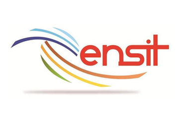

Vers une industrie 4.0 fiable, disponible et sécurisée
Dataset HNEI (14 cellules). Diagnostic + pronostic avec optimisation métier (seuil 0,10) → recall critique 95,6%.
NASA C‑MAPSS / FEMTO. Random Forest diagnostic (92% accuracy), réseau de neurones pour la RUL.
CMAPSS FD001. CNN+LSTM : diagnostic AUC 0,991, rappel critique 100% (sécurité aérienne).
MTBF, MTTR, disponibilité, lois de fiabilité (Weibull, Log‑Normale), B10/B50/B90.
Random Forest, SVM, CNN+LSTM. Classes de santé (Excellent → Critique) avec seuils optimisés métier.
XGBoost, GRU, réseaux de neurones. Comparaison rigoureuse, split par batterie/moteur, early stopping.
AMDEC, matrice de décision, alertes hiérarchiques, intégration possible ERP/GMAO.
Une méthodologie unifiée (FMDS → diagnostic → pronostic) validée sur trois cas réels avec des jeux de données publics. Optimisation des seuils pour prioriser la sécurité (recall critique 95,6% pour batteries, 100% pour moteurs). Comparaison rigoureuse de modèles : XGBoost surpasse les RNN sur petits volumes, tandis que CNN+LSTM excelle sur séquences longues.